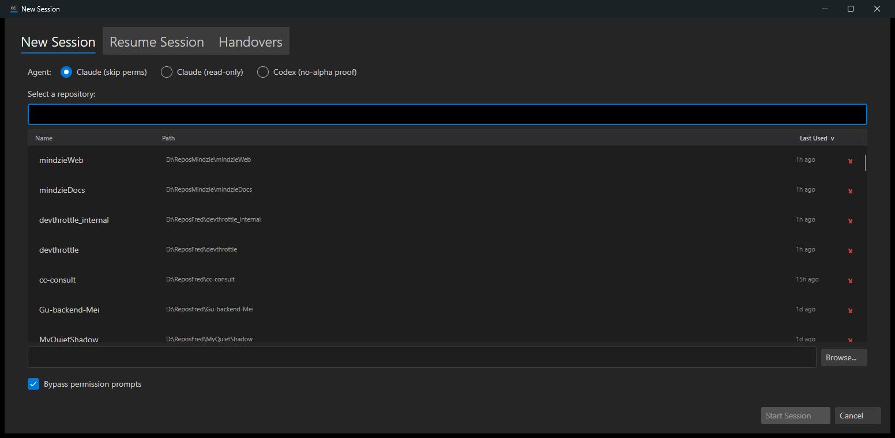
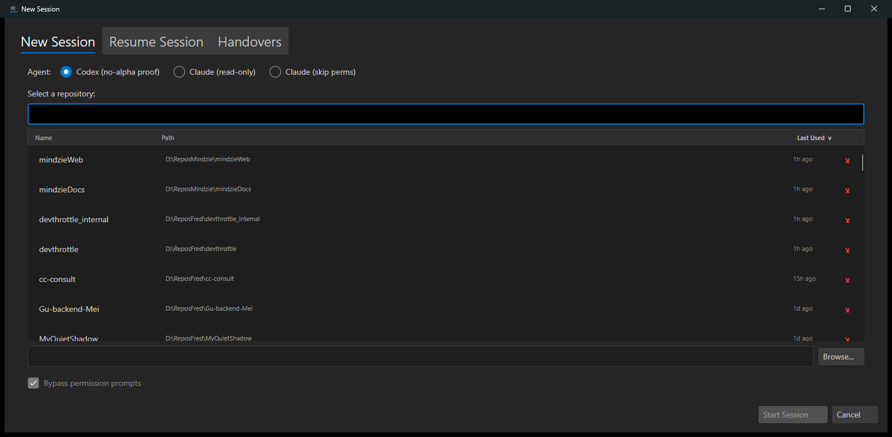

Developer Agent proof report. Built and verified in an isolated test Director (slot 9,
its own git worktree) per CLAUDE.md rule 0b. Depends on #489 (merged), which provides the ordered
agent.entries model and the AgentEntry/AgentEntryStore API.
NewSessionDialog.axaml were
replaced with an ItemsControl of RadioButtons bound to the enabled
agent.entries (issue #489), rendered in stored order, labeled by each
entry's displayName, with the first enabled entry pre-selected. An empty
list shows a "No agents configured" hint and disables Start.IsAgentSelectableOutsideAlpha helper and the alpha visibility checks on
Codex/Gemini/OpenCode were deleted; the agent list no longer reads AlphaMode.
Handovers, GitHub (Remote), and the quick-launch cards keep their existing alpha gating
untouched (HandoversTab.IsVisible = true; GitHubTab.IsVisible = alpha;
QuickLaunchPanel.IsVisible = alpha; — identical to before).MainWindow.ShowNewSessionDialog now builds
the launch from dialog.SelectedAgentEntry: the entry's
type selects the agent strategy, its executablePath is slotted into a
per-launch AgentOptions copy (CreateAgentForEntry), and its
preset/model/argsOverride resolve via the shared
AgentEntry.ToToolConfig().ResolveEffectiveCommandLineArguments() into the launch
arguments. For a Claude entry the per-session Bypass-permissions checkbox still applies on top.SelectedAgentEntry is always correct at launch time.src/CcDirector.Avalonia/NewSessionDialog.axaml — ItemsControl agent row + no-agents hint.src/CcDirector.Avalonia/NewSessionDialog.axaml.cs — AgentEntryOption VM,
LoadAgentEntries, SelectedAgentEntry, alpha helper removed,
RawCli panel seeded from the entry.src/CcDirector.Avalonia/MainWindow.axaml.cs — entry-driven launch
(CreateAgentForEntry + per-launch path override + entry effective args).A known agent.entries was written to config.json with
alpha_mode = false and these entries (the user's real config was backed up and restored
afterward):
1. Claude (skip perms) ClaudeCode enabled preset="Automatic (skip permissions)" 2. Claude (read-only) ClaudeCode enabled preset="Standard" model="sonnet" 3. Codex (no-alpha proof) Codex enabled preset="Standard" 4. Gemini (DISABLED - absent) Gemini DISABLED preset="Standard"
| # | Criterion | Expected | Actual (proof) | Result |
|---|---|---|---|---|
| 1 | One option per enabled entry, by displayName, in order (incl. two same-type) | Row shows "Claude (skip perms)", "Claude (read-only)", "Codex (no-alpha proof)" in order | Screenshot 01-agent-row.png + UIA radios in that exact order; log
LoadAgentEntries: 4 entries, 3 enabled |
PASS |
| 2 | First enabled entry selected on open | "Claude (skip perms)" selected | UIA 'Claude (skip perms)' selected=True; others False (screenshot 01) |
PASS |
| 3 | Disabled entry does NOT appear | "Gemini" (disabled) absent from the row | Only 3 radios present; Gemini absent (screenshot 01); log "3 enabled" of 4 entries | PASS |
| 4 | Reorder in config changes order + pre-selected agent, no alpha | After moving Codex first, row order + selection follow; alpha still off | Screenshot 02-reordered.png: order Codex, Claude (read-only), Claude (skip perms);
UIA 'Codex (no-alpha proof)' selected=True; log
first=Codex (no-alpha proof) |
PASS |
| 5 | alpha_mode=false: formerly alpha-gated agents appear when enabled | Codex visible with alpha off | config.json alpha_mode=false + Codex radio present (screenshots 01/02); log
alphaFeatures=False, enabledAgents=3 |
PASS |
| 6 | Starting with a selected non-default entry launches its type/path/preset/model/args | Selecting "Claude (read-only)" (Standard + model sonnet), Bypass off, launches
claude.EXE with --model sonnet and no skip-permissions |
03-launch-command.txt: agent=ClaudeCode,
exe=...\claude.EXE, bypassPermissions=False,
ClaudeAgent BuildLaunchSpec: userArgs=--model sonnet |
PASS |
| 7 | Handovers and GitHub alpha features unchanged | With alpha off, the GitHub (Remote) tab is hidden (still alpha-gated); the alpha-gating lines for Handovers/GitHub/quick-launch are byte-identical to origin/main | Screenshots 01/02 show only New Session / Resume Session / Handovers tabs — the
GitHub (Remote) tab is hidden with alpha off; git show origin/main confirms
the three IsVisible lines are unchanged |
PASS |
01 — Agent row, original order, first selected, disabled Gemini absent (alpha off):

02 — After reordering in config: Codex first and pre-selected (no alpha):

03 — AC6 launch command: see 03-launch-command.txt (Director log excerpt).
No drift. This is a UI behavior change in CcDirector.Avalonia consuming the existing
#489 model; no architecture container added/removed and no security posture change, so no
docs/cencon/ file needed updating.
dotnet build cc-director.sln — Build succeeded, 0 Warnings, 0 Errors.I believe this is finished. All seven acceptance criteria were verified with proof in the running app on an isolated test Director, the solution builds clean, and the user's real config was restored unchanged.